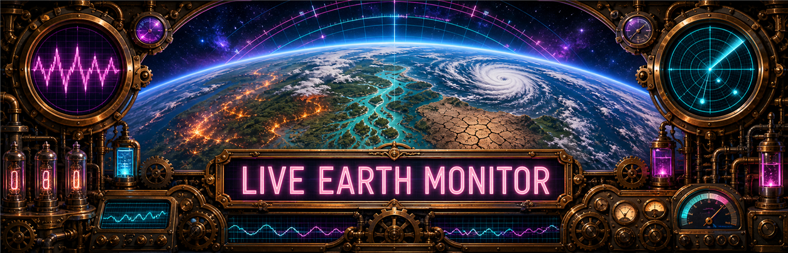

Live Natural Hazard Map
Explore current global hazards from NASA EONET, GDACS, and the Copernicus Global Drought Observatory.
Loading all live hazard overlays...
- Wildfire — open NASA EONET events updated within 14 days
- Flood — GDACS event location and alert level
- Drought — latest global Copernicus short-term SPI (3-month precipitation window)
- Tropical cyclone — current GDACS system location
Only one hazard layer is displayed at a time for clarity. Sources are queried on page load, on demand, and automatically every 15 minutes. Event markers identify a reported event location; the drought overlay is a spatial analysis layer. Source dates and alert details appear when markers are selected.
Schumann Resonance
Schumann resonance spectrograms track extremely-low-frequency electromagnetic activity in the Earth-ionosphere cavity. This is observational context only; local weather, instrumentation, and station noise can affect the display.
How to read it
Bright horizontal bands near the low-frequency resonance modes indicate stronger ELF signal energy. Sudden vertical flashes can be transient disturbances, lightning-driven bursts, instrument noise, or broader electromagnetic activity. Use it as a companion monitor, not a standalone hazard signal.
Open source page